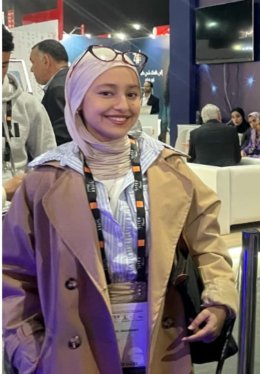
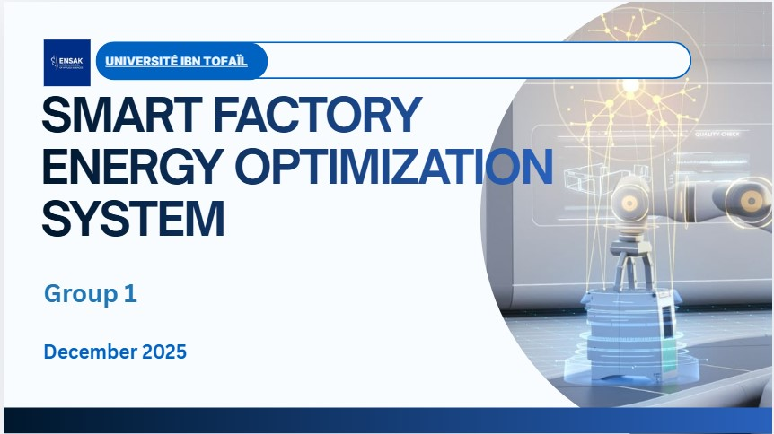
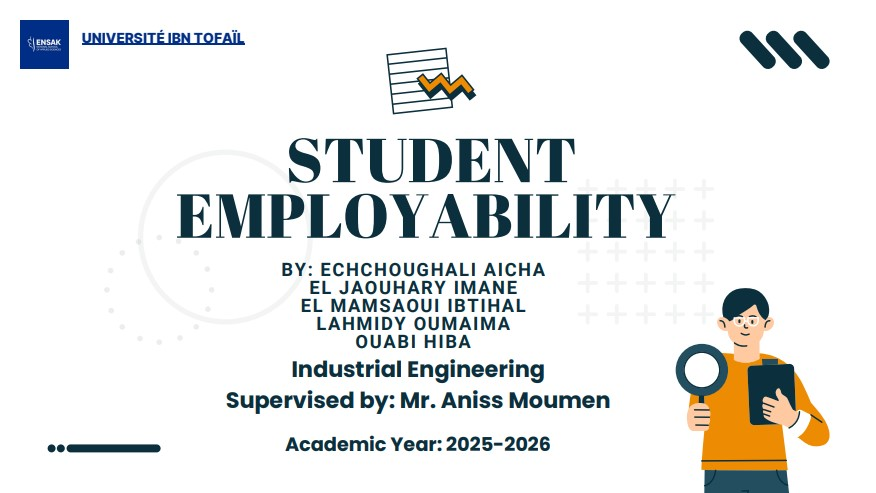
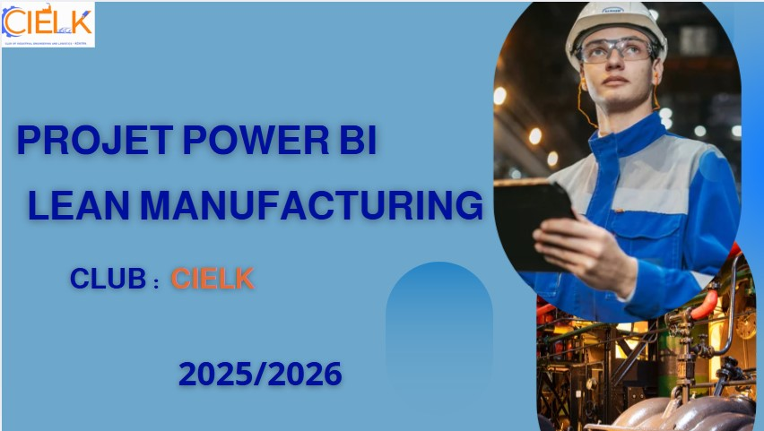

Bonjour, je suis
Étudiante Ingénieure · Génie Industriel · ENSA Kénitra

Étudiante en 1ère année du cycle ingénieur en génie industriel à l'ENSA Kénitra, je possède des compétences en développement, programmation et analyse de données. Motivée et curieuse, je suis à la recherche d'opportunités pour mettre en pratique mes compétences et continuer à apprendre.

Système d'analyse de données industrielles pour détecter les pertes énergétiques et prédire les pannes machines. Modèle de régression logistique avec 98,37% de précision sur 100 000+ relevés.

Étude mixte (qualitative & quantitative) sur les facteurs d'employabilité des étudiants ingénieurs au Maroc : hard skills, soft skills et expérience pratique. Analyse statistique avec R.

Optimisation d'un poste d'assemblage via la méthodologie DMAIC et Power BI. Création de KPIs en DAX, analyse de Pareto et Ishikawa — 83% des problèmes identifiés et résolus.
Ouverte aux opportunités de stage, projets collaboratifs et échanges professionnels.
LinkedIn — Imane El Jaouhary